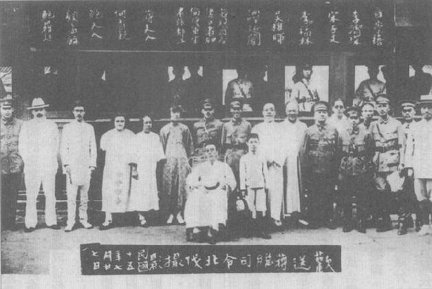
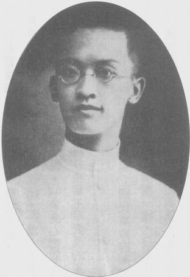
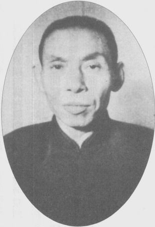
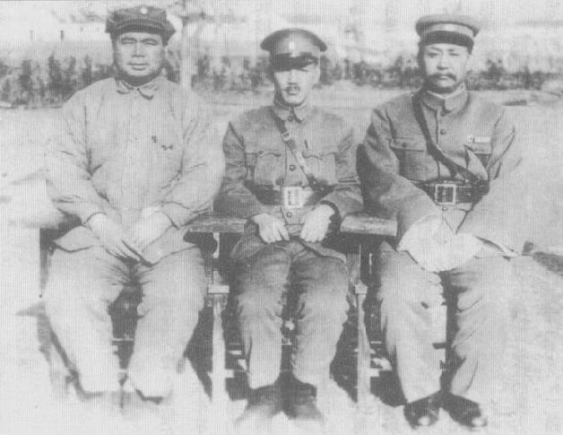
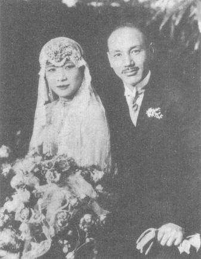
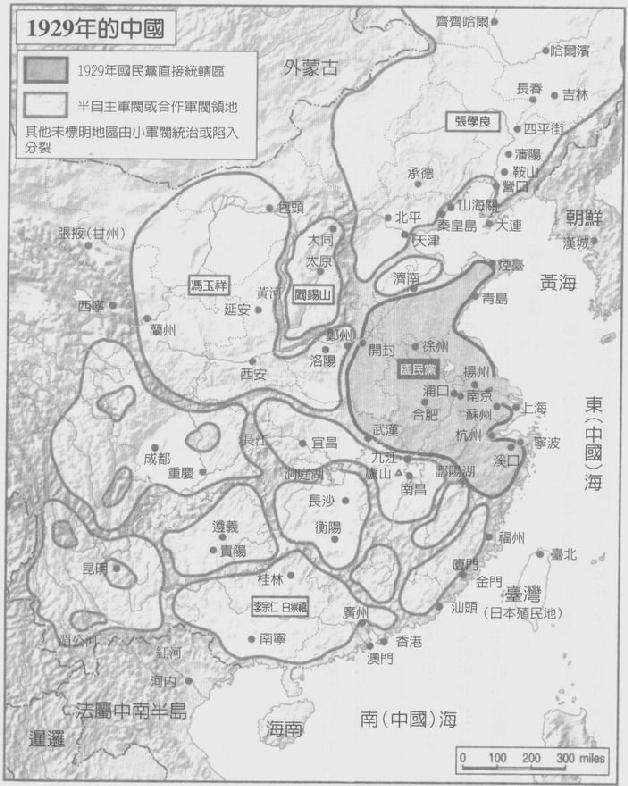

|
前一页 后一页 回目录 回主页 |
第二章：北伐与内战 1925年春天，列强在中国依然横行无忌，但中国人民已越来越不愿容忍这些侮辱。5月间， 孙中山逝世之后2个月，上海某日资纺织厂外守卫开枪打死罢工工人；等到学生示威活动爆发，英国人带领的警察又打死11名示威者。武汉方面，英国志愿队架起机关枪对付“数千名滋事苦力”；但当滋事者火烧九江日本、英国领事馆，连英、法陆战队都紧急赶来驰援①。 ① New York Times, June 5 and 12, 1925. 警方把上海的骚乱归为“中国布尔什维克”活动，尤其是“国民党激进派”①。《纽约时报》特派记者警告说：“激进党”（国民党）决心废止“所有的外国特殊地位、特权和治外法权”。它又叹息列强对如何处理此一挑战并无共识，不像当年对义和团事变的回应。《纽时》记者警告，就连日本也可能“和黄种人站在同一边，对抗西方”②。 ① New York Times, May 31, 1925. 上海《申报》1925年5月31日报导，有7人遇害。关于蒋经国的角色，见Chiang Ching-kuo（蒋经国），"My Days in Sovier Russia," in Chiang Ching-kuo Remembered ed. Ray S.Cline (Washington, D.C.: U.S.Global Strategy Council, 1989), p.153. ② New York Times, June 5, 1925. 由春季迈入夏季，动乱愈演愈烈。1925五年6月23日，包括童子军和黄埔军校学生在内的一支反帝国主义游行队伍行经沙面岛的外侨居住区。有人开了一枪，岛上英军开火反击，击毙52人，另有上百人受伤①。蒋介石闻报有20名黄埔学员丧生后，其对英国的仇恨升至新高。他写下：“英贼凶暴……不以华人之性命为事。”他每天在日记中写下一些反英意见，如“汝忌阴番之杀同胞乎”，他也一度记下：“法、美可恨。”②蒋介石反帝国主义的心，跟他的爱国精神一样强烈，因为他视两者为共生关系。 ① Jonathan D.Spence（史景迁），The Search for Nodern China (New York: W.W.Norton, 1990), p.340. ② Chiang Diaries, Hoover, June 23, July 29, September 16, 1925, box 4, folders 11,12,14. 7月1日，国民党宣布在广州成立国民政府，推举汪精卫为主席。另两名重要委员是党内大老中最左倾的廖仲恺，以及高阶将领许崇智。为强化他高尚、无私的军官形象，蒋氏婉拒出任政府委员一职，因他觉得军人不宜参与政府运作①。不过，他再度被任命为新成立的军事委员会委员；在他的建议之下，所有的军事单位，包括联盟的军阀部队，今后都统称为“国民革命军”。此外，他替主张及早发动北伐以统一中国的若干国民党领袖站上最前线，要求建立7个军、在广东建立若干军火库，并将广西纳入革命阵营。最后一个目标是把广西新兴主力部队“广西陆军第一军”纳入国民革命军。由34岁李宗仁所率领的这支部队在1925年底已镇服广西省内所有军阀。经过冗长交涉，李宗仁和他的两大亲信同僚黄绍竑和白崇喜，正式同意加入国民革命军，但是事实上他们对广西军队和省政仍保持有效的控制②。 ① Chiang Diaries, Hoover, June 21, 1925, box 4, folders 11. ② Diana Lary, Region and Nation: The Kwangsi Clique in Chinese Politics, 1925-1937 (Cambridge, Eanland: Cambridge University Press, 1974), pp.58-61. 李、黄、白三人不仅是军阀，还是当时少数有能力的军事领袖，矢志投身恢复中国的统一和富强。他们率领的桂系拥有当时中国所有部队当中领导统御最佳、效率最高，并且藉由对经过广西省的鸦片课税，成为粮饷最充裕的军队。桂系对社会或经济改革没有太大兴趣，绝不会放弃维持本身的独立①。 ① 同上注。 蒋介石表示准备北伐有一主要目标，即肃清军中的贪腐。他下令：“自某月起，各团饷项，向军需局直接支领，师部军需长，只于发饷时负监督稽核之责任，各部更不得于驻防地自行筹款。”①他打算把国民革命军打造成为不仅高度守纪律且现代化的组织，像日本的皇军或苏联的红军那样诚实、有效率的部队②。这正是他高度重视政工干部角色，也愿意接受政工干部大部分为共产党员的原因之一；显示早在此时他已承认中共党员通常比国民党干部更有纪律、专心致志和诚实。政工干部另外的功能是确保部队指挥官以及其他军官的忠诚和诚实，并且要保证征召来的士兵和平民得到相对人道的待遇。 ① 1925年12月15日，军事委员会改革军政建议书，秦孝仪《大事长编》卷一，p.109。 ② Chiang Diaries, Hoover, July 23, 1925, box 4, folder 12. 不幸的是，蒋氏手下大多数将领根本拒绝他集中军中财务的方案——蒋介石不久就发觉，他必须把反贪腐的优先度降低，着重保持他手下品流复杂文武官员之团结和忠诚。他别无选择。然而很重要的是，虽然1926年他取得国民革命军总司令职位之后，此一基本财务改革立刻流产，但却显示其实他了解大陆此一贪腐毛病（及其可怕的后果），即使他直到1949年撤退台湾前都未能成功反贪腐。 1925年8月20日，廖仲恺在广州出席国民党中央执行委员会会议，甫下车即有几个人从暗处跳出来，开枪把他打死。蒋介石获讯后，当天夜里在日记写下，英国人一定是幕后主使①。在鲍罗廷建议下，国民政府由汪精卫、许崇智和蒋介石组成一个特别委员会，负责调査。蒋氏以后生晚辈之姿突然跃居党内三大要角，而党内高层领袖中大家公认最为保守的胡汉民则被排除在外。事实上，不久后就发现原来刺杀廖仲恺的一个主嫌竟是胡汉民的堂弟，此人在被传讯之前就逃离广州。 ① Chiang Diaries, Hoover, August 20, 1925, box 4, folder 13. 调査亦发现，国民党和粤军之内有一群保守派阴谋铲除广州的左派分子。中央政治委员会下令将许崇智——负责调查工作的三大员之一——手下几名高阶军官处以极刑。许崇智本人并未被认为涉及廖案，但是另一项指控旋即浮上台面——他涉嫌和陈炯明有秘密接触。9月20日上午，蒋介石率领少许士兵包围许崇智住处。蒋要求名义上仍是上司的许崇智，离开广州3个月①。许崇智的名声腐败人尽皆知，中央政治委员会同意他立刻前往上海。汪精卫和蒋介石也在中央政治委员会的通过下，派反共的胡汉民前往莫斯科，并且讽刺的是，旋即提名胡汉民为国民党驻共产国际代表②。 ① Te-Kong Tong（唐德刚）and Li Tsung-jin（Li Congren, 李宗仁），The Memoris of Li Tsung-Jen (Boulder, Colo.: Westview, 1979), p.148. ② C.Martin Wilbur（韦慕廷）， The Nationalist Revolution in China (Cambridge, England: Cambridge University Press, 1974), p.27. 决定国民党方向的权力现在落到两个人肩上。汪精卫是政府领导人、革命军首席党代表，也是昔日反清革命党人最知名的一位。蒋则是地位较低的军事首长，兼黄埔军校校长、广东卫戍司令。两人似乎都坚定地站在国民党的左翼。汪外向、好说大话，蒋则内向、一板正经。根据鲍罗廷的说法，汪善体人意而且“能闻一知二”。可是，若被要求“负起责任，他一向退让不遑”①。 ① Zhang Guotao（张国焘），The Rise of the Chinese Communist Party (Lawrence: University Press of Kansas, 1972), p.480. 引述鲍罗廷如此说。 汪能言善道，但“重权力、好出名”。鲍罗廷、李宗仁和其他人认为汪不能信任，也不够坚定。鲍罗廷反而觉得蒋虽才学有限，却“勇于承担责任”。李宗仁和蒋第四度、也是最后一次决裂之后多年，形容蒋“心胸狭窄、偏执顽固、狡滑、多疑、好妒”，但也承认“他喜爱做决定”①。 ① 同上注； Te-kong Tong（唐德刚）and Li Tsung-jen（Li Congren，李宗仁），Memoris, pp.111,192. 事实上一般公认，顽固（或说坚定）和果决是蒋的主要特质。他刻意培养、练习并向外界展现这些特质，可是在和军阀、日本人、中共及美国人的谈判中，他也有战术灵活的时候，必要时也务实地后退、让步。在蒋所处的环境里，狡猾和猜疑往往是成功政治领袖的标记，蒋也有这样的特质而且一路精进。尽管如此，他对自己的诚心以及精明之强烈信念，不但让他喜欢被赞扬和奉承，也颇能领受传达尊重、好意，以及让步的举措。本质上他不是一个愤世嫉俗的人。 直到许崇智下台之前，蒋一路稳步上升，并没有涉入任何实际或可疑的政治阴谋。在此之前他没有试图打造派系（除了年轻的黄埔学生）以累积政治盟友，或者争取政治地位。此外，蒋似乎是个异常能够克制自己野心的强人。浙江人的身分是他政治缺陷的其中一项，革命军当中除第一军有许多黄埔学生之外，绝大部分的官兵是广东、广西、云南、湖南人。 廖仲恺、胡汉民和许崇智等大老的相继退出舞台，以及共产党的持续掘起，让国民党内出现了裂痕。1925年夏天，戴季陶发表两本小册子，指控共产党代表外来的激进主义，且“轻蔑中国价值，威胁到中国的社会秩序”①。戴也写了一封长信给蒋，重申他担心共产党渗透国民党的后果十分可怕。蒋却大怒，慨叹戴和一干老朋友“老朽、跟不上时代”②。 ① Chiang Diaries, Hoover, August 20, 1925, box 4, folder 13. ② Chiang Diaries, Hoover, October 18, 1925, box 4, folder 15. 蒋大部分的政工已是共产党籍，他也日益关注周恩来领导的政工动员工作，甚至最忠诚的第一军，他都任命周为第一师政治部主任。就和当时他的日记内容一样，此一任命案显示蒋的思维依然十分左倾，相信与苏联的同志关系，用以追求共同利益——打倒全球帝国主义、统一中国——但不愿让共产国际干预中国国内事务。这个态度还有另一个例证，10月间，他很快就答应15岁的儿子蒋经国前往莫斯科东方劳动者大学念书。同一个月，终于敉平陈炯明势力后，他在中、苏军官出席的庆祝会上赞扬俄国人的国民精神和共产国际的力量，以及它反帝国主义革命的使命。他说，中国若不与世界上所有的革命派结合，中国的革命必败①。 ① Yu Minling（余敏玲），"A Reassessment of Chiang Kai-shek and the Policy of Alliance with the Soviet Union, 1923-1927," in The Chinese Revolution in the 1920s, ed. Mechthild Leutner. Roland Felber, Mikhail L.Tarenko, and Alexander M.grigoriev (London: Routledge Cruzon, 2002), p.113. 但是，国民党的裂缝日益扩大。12月间，戴季陶等一干大老在北京西山召开人数不足的中央执行委员全体会议，表决开除国民党内的共产党人党籍，停聘鲍罗廷，解散中央政治委员会。蒋在一封私人信函中责备中国革命迄今未能成功，就是因为西山会议派的傲慢和腐化的嫉妒。同一个月，他对黄埔学生演讲，“吾为三民主义而死，亦即为共产主义而死也。”①同时，蒋在中国青年心目中的地位越来越高。1926年1月，国民党在广州召开第二次全国代表大会，蒋肩上披着斗篷出现在代表们的面前，吸引众人的目光。对张国焘这位共产党领袖而言，蒋是在传达一个“重要军事领袖”的感觉，并塑造“自成一格”的形象②。 ① Wilbur（韦慕廷）， Nationalist Revolution, pp.30-31; Yu Minling（余敏玲），"Reassessment," pp.108-109. ② Zhang Guotao（张国焘），Rise of the Chinese Communist Party, p.479. 二全大会有1/3的党代表是共产党人，蒋首次被选为中央执行委员①。国民党党工干部70％为共产党人，国民革命军中876名政工干部也有75％为共产党员②。根据共产国际的文件，黄埔军校甄选第一期学生时，蒋甚至向俄国顾问建议所有的政工人员都由共产党人担任——即使共产党在国民革命军的军官和基层士兵中只占极少数③。有位俄国顾问向他的上级提出警告，表示蒋偏袒中共已引起“国民党内各级指挥官的愤慨”，搞不好会有反弹④。 ① S.I.Hsiung（熊式一）， The Life of Chiang Kai-shek (Longdon, Pete Davies, 1948), pp.238-240. ② Chen Lifu（陈立夫），The Storm Clouds Clear over China (Stanford, Calif.: Hoover Institution Press, 1994), p.64. 这是国民党情报机关的估计，有可能把只是涉嫌加入共产党或只是同情共产党者也加上去，因此浮报。亦可参见Wilbur（韦慕廷），Nationalist Revolution, p.36. ③ Yu Minling（余敏玲），"Reassessment," p.113. ④ C.Martin Wilbur（韦慕廷）and Julie Lien-ying How（夏连蔭），Documents on Communisim, Nationalism, and Soviet Advisors in China, 1918-1927: Papers Seized in the 1927 Peking Raid (New York: Columbia University Press, 1956), p.259. 同时，俄国顾问团在广州的人数也快速扩张。苏联六艘轮船定期载送石油、武器，甚至解体的飞机到广州来①。俄国派至华南的代表团向驻北京苏联大使馆报告，它实际上已承担起国民革命军参谋本部的工作。这份报告说：“国民党现今的存在是我们创造出来……到目前为止，只要我们提案没有一项不会被政府採纳。”化名季山嘉（Kisanka）的库比雪夫（N.Y.Kuibyshev）将军，11月间取代加伦出任苏联军事顾问团团长。季山嘉一月呈报给莫斯科的一份报告，透露出苏联的终极目标：现在还不能“完全控制”住国民革命军②。 ① Wilbur（韦慕廷）， Nationalist Revolution, p.44. ② C.Martin Wilbur（韦慕廷）and Julie Lien-ying How（夏连蔭），Missionaries of Revolution, Soviet Advisors and Nationalist China, 1920-1927 (Cambridge: Harvard University Press, 1989), p.249. 有位俄国顾问觉得蒋“自负、缄默、野心勃勃”，但是若能“微妙地赞美”他，“以平等地位待他、绝不显示向他夺取一丝一毫权力”，可从他那里得到许多。即令如此，季山嘉仍然公然鄙视他的中国军方同僚，写下：“他们完全不懂兵法。”①冲突遂在所难免。早在1926年1月蒋就记下他对新任苏联军事顾问团团长及其部属的不满：“我已诚往，彼以诈来。”季山嘉“讪笑”他之后，蒋又抱怨俄国人欺骗、多疑、善妒②。 ① 同上注，pp.248-250。 ② Chiang Diaries, Hoover, February 7 and 11, 1926, box 4, folder 19. 蒋全力规划早日发动北伐是两人争执不下的其中一个议题。国民革命军此时拥有85000名部队、60000枝枪；军阀对手可是10倍之多。蒋深信精神、意志力才是胜负关键。可是，斯大林反对提早北伐：他依然担心日本的反应，也知道中国共产党需要争取时间①。 ① Wilbur（韦慕廷），Nationalist Revolution, pp.45-46. 同时，上海的西山会议派散布谣言，试图煽风点火，激发广州人士疑心中共、汪精卫和俄国人有阴谋要铲除蒋①。蒋的部属向他报告目，广州出现明显出自共产党之手、诋毁他的传单。蒋氏此时开始在日记批评起共产党，例如有一天他写下国民党内的共产党人“在党内活动不能公开，即不能开诚相见……”；不久，他开始觉得自己是“单枪匹马，孤苦伶仃”，他写下，政治生活彷彿“绝境”②。 ① 同上注，p.14。 ② Chiang Diaries, Hoover, March 17, 1926, box 4, folder 20. 就在这时候，汪精卫派他到莫斯科和苏联商讨他的北伐计划，以及他和季山嘉之间的不和。陈果夫的弟弟立夫刚从美国留学回来，出任蒋的机要秘书。陈立夫后来著书说蒋并不想到莫斯科，但是他觉得他必须遵守国民党和孙中山的原则，也就是党（亦即汪精卫）控制了军（蒋本身）①。照陈立夫的说法，3月18日午夜过后，中共中央执行委员会里头有个浙江籍成员传递密告给蒋，表示共产党和俄国人正阴谋要逼他下台②。 ① 1996年5月29日，陈立夫访谈。 ② Chen Lifu（陈立夫），Storm Clouds, pp.28-29. 次日，革命军一艘名叫“中山舰”的炮艇（舰长为共产党员）做出令蒋起疑的移动，而且汪精卫当天两度打电话问起蒋的行程①。据陈立夫的说法，蒋担心有陷阱，决定搭车前往某广州城外到一处效忠他的第一军成员驻地。途中，他决定要反击共产党冲着他来的威胁②。他和第一军高阶将领彻夜讨论，3月20日清晨4点钟，他宣布广州全市戒严，逮捕中山舰舰长（李之龙）以及周恩来在内约50名共产党人。第一军部队也解除了广州共产党纠察队的武装，并没收俄国顾问团营区卫兵的武器③。下午，廖仲恺遗孀何香凝冲到蒋的总部，追问：“你疯了吗？还是你要向帝国主义投降？”想到总理孙中山一向深信他会接受文人统治，蒋不禁“伏案痛哭，有如小童”④。 ① Chiang Diaries, Hoover, March 19, 1926, box 4, folder 20. ② 同上注。陈立夫在70年后回忆说，当天他和蒋不是要前往第一军营房，而是要搭乘广州的一艘俄国船只。蒋突然变卦，决定回头对抗。Chen Lifu（陈立夫），Storm Clouds, pp.27-28. ③ Chiang Diaries, Hoover, March 19, 1926, box 4, folder 20. ④ 杨天石，《蒋介石秘档与蒋介石真相》（北京：社会科学文献出版社，2002）p.13。 苏联对此事件的后续报告似乎证实，蒋怀疑汪精卫居心叵测不无道理。莫斯科方面在此阶段根本不可能会试图倒蒋。每一个迹象无不显示斯大林和鲍罗廷视他如雅各宾激进主义派，近似共产党人，在国际事务上接受共产国际的权威，但内政事务上则不，有朝一日说不定可将他争取过来。奉系军阀张作霖1927年4月初占领苏联驻北京大使馆，在抄出的文件中也找不到1926年3月苏联有反蒋的阴谋。俄国内部的报告也下结论，认为苏联顾问躁进，想抓权，却激起公愤，但也暗示“汪精卫在‘320中山舰事件’期间及事后都是反蒋联盟的一员”①。 ① Chiang Diaries, Hoover, January 12, 1926, box 4, folder 18; Yu Minling（余敏玲），"Reassessment," p.114，引述共产国际一份档案文件——这是评估苏联对中国革命援助的考察团团长布伯诺夫（Bubnov）提出的报告。1926年3月26日中山舰事件发生时，这个考察团正好在中国，它的报告集中在为何会有这些挫败的原因。参见同上注，p.131。 尽管有这些不确定，事后他也相信中山舰舰长未涉及阴谋，蒋仍然掌握机会不仅确立了国民党在中国有超越苏联顾问的完全权力，制止中共渗透国民党，还确立他在国民党乃至革命运动的领导地位。可是，他希望避免被看做藉由政变达成这些目标，因为这会违背孙中山的原则以及他自己诚正的誓言——也会危害到未来苏联的援助。因此他立刻向俄国人保证，一切不变。事件当天下午，他就把部队撤离苏联营区并表示道歉。他也命令士兵撤离工会，释放周恩来等大部分被扣押的共产党人。汪精卫大怒，以为除了第一军之外，自己可以号召所有军队反蒋。不料事与愿违，各军司令除了一、二例外，都强烈反共，乐见蒋对中共及俄国人的限制①。 ① 杨天石，《蒋介石秘档》，p.132。 国民党中央执行委员会迅即核准蒋的行动，包括让他接下汪精卫军事委员会主席的职位。甚且，中执会还提议“鉴于当前情势，左翼同志应暂时后退”。汪精卫以养病为名，立即前往上海，后转赴法国①。蒋向苏联在广州的高阶外交官索罗扶耶夫（Solovyev）担保，他的目的不是阻止国民党联俄容共。他要求加伦回任，以及暂时回莫斯科的鲍罗廷快点回到广州。索罗扶耶夫同意，并表示他会罢黜季山嘉②。 ① Boorman, Biographical Dictionary, vol.3, p.37. ② 同上注，pp.134-135。 蒋也逮捕若干国民党保守派，并向黄埔师生发表公开信表示他和孙中山一样，认为若不容共，革命阵线无从团结起来①。凑巧在广州的苏联考察团团长布勃诺夫（A.S.Bubnov）认为蒋愿意也有能力“和我们合作”②。虽然中共此时已有30000名党员，但短期内夺权的机会仍不大，斯大林和共产国际因而同意它应继续维持和国民党的统一战线。 ① 《蒋介石日记类抄：政党一》，《民国档案》4（1998）：8，9。 ② 陈独秀，《中国革命势力统一政策与广州事变》，《向导》（上海），1926年4月3日no.148；杨天石，《蒋介石秘档》，pp.140-141。 蒋为3·20事件向国民党中执会自请处分，但中执会不出众人所料既拒绝惩处蒋，又决议把革命大业交付给他①。6月5日，蒋被任命为国民革命军总司令，一个月之后又接任中央执行委员会常务委员会主席。和孙中山一样，西方媒体自此即称他“Generalissimo”②。国民党中央组织部部长陈果夫和弟弟陈立夫，以及一向提携蒋的张人杰联手清共，拔掉多数共产党人所居的各级党务主管工作。陈果夫也开始派出手下秘密小组渗透工会、农会、甚至军中政工干部③。 ① Chiang Diaries, Hoover, May 17, 1926, box 4, folder 22. ② Boorman, Biographical Dictionary, vol. 1, p.325. ③ Chen Lifu（陈立夫）, Storm Clouds, pp.58-59.

这时，蒋早日发动北伐的想法更加坚决了，他评估若一开始就能连番告捷，便可以把中国的政界、学界和企业界团结起 来支持他。他也晓得，虽然俄共、中共都认为他只是“刚刚窜起的无名小卒”、“自封的拿破仑”，可是一旦他发动北伐他们就别无选择，只能支持他。蒋有三个军——第一、第七和第四——的实力，承担了北伐一路激战的主要任务。除了第一军外，其他军都有军阀部队的背景。六月间，反国民党的湖南军阀手下最大一个师的师长唐生智率部倒戈过来，被授予第八军的番号。此张摄于1926年7月，蒋介石（左8）刚被任命为国民革命军总司令，准备北伐。 蒋的策略是取湖南，占领往北三百英里的长江重镇武汉，与左倾的军阀“基督将军”冯玉祥（以水管替官兵施洗，要他们信基督教而闻名）连线，再往北京推进。长沙的美国籍传教士医生葛林（Phil Greene）在家书中提到，湖南有许多“小王国”割据，各有军事首脑和成群游手好闲的士兵①。事实上，湖南一省就有23个大小军阀，国民革命军北进，他们不是闻风而逃，就是加入革命军行列。蒋的军官宣称“所向无敌”②。 ① Ruth Altman Greene, Hsiang-ya Journal (Hamden, Conn.: Archon Books, 1977). ② Michael Gibson, "Chiang Kai-shek's Central Army, 1924-1938," Ph.D.diss., George Washington University, 1985, p.56. 7月11日，国民革命军在一大队青年学生尾随下进入长沙。次月某一天，湘雅医院（Yale-in-China Xiang Ya Hospital）的外科医生葛林接到军方总部传话：“立刻派牙医来照料总司令。”湘雅医院受西式训练的华人牙医早已逃往上海，因此葛林亲自出诊。等了好几个小时后，“进来一名男子，身穿平常白衫、灰裤，中式鞋子。”葛林以为他是传令兵，问起名字，病人只说：“姓蒋。”葛林解释，他虽不是牙医，但可以替他拔牙。蒋说：“那就拔吧。”葛林说，蒋不像一般中国人“东问西问”，很乾脆。3天后总司令在湘雅医院对面设立一所全新、设备齐全、两百张病床的军医院，所有的美国人都很佩服。这是可喜的兆头。葛林认为，或许梦想终于要成真了——中国恢复完全主权，重建自尊，欢迎愿意伸出援手的外国人①。 ① Greene, Hsiang-ya Journal, pp.40-47. 蒋命令国民革命军立即进攻湖北。接下来的武汉争夺战，一向不怎么欣赏蒋的李宗仁，赞佩总司令“镇定地”站在前线“在黑暗中……不畏擦身而过的子弹”①。10月底，革命军已击溃湖北军阀势力，攻占武汉。同时，何应钦率领的第一军也绥靖福建，进入浙江。闽、浙两省军阀立刻宣布效忠国民党，蒋也立予收编②。蒋一再招降纳叛，来者不拒，把后续的政治问题留到以后再头痛。这曾是孙中山的旧策略，日后它将使蒋吃尽苦头，但在此关口，他觉得自己别无他计。 ① Te-kong Tong（唐德刚）and Li Tsung-jen（Li Congren，李宗仁），Memoirs, p.183. ② Gibson, "Chiang Kai-shek's Central Army," p.93. 北伐途中，蒋率本部参谋随主力部队行进，经常骑马、偶亦坐轿（因为根本没有卡车）。不论身在何方，蒋总是晨起静坐、运动。他每天早晨五点起床，先练拳术，用那种梦幻似的传统姿态慢慢地伸展、紧缩并放松他的肌肉。接著练习吐纳。面对每天的挑战，他总以自己的新儒家揩模曾国藩和王阳明为师，并参考古代兵学家孙子，思索他们会怎么做①。 ① Chen Lifu（陈立夫），Columbia interviews, part 2, p.1；董显光，《蒋介石》第一册，（上海：中华书局）p.180。 蒋面临的挑战极大，他又巨细靡遗、大小皆管。由于他对底下多数将领的能力没有信心，或是未必信赖他们，有时他直接找团长沟通①。台北所藏他的军事指令和通信的全集，有78卷之多②。他经常亲自裁定分配多少弹药和器材给哪个单位，有一次还细微到配给4门臼炮、100发炮弹、400枚手溜弹。鉴于当时器材、弹药、军毯、粮食，当然还有金钱奇缺，有时候是否配发4门臼炮这种小事都不只是军事问题，还是政治问题。每一次蒋分配稀少的供应品、每一次的部队战术调遣，都会影响到其他单位，引起羡妒。第一次世界大战所用的重炮是特别珍贵的罕有资产，有时候这几门炮要怎么调遣，都得由蒋亲自裁定。 ① Ray Huang（黄仁宇），Chiang Kai-shek and His Diaries as a Historical Source (Armonk, N.Y.: M.E.Sharpe, 1996), part 1, p.31. ② Zhang Ruide（张瑞德），"Chiang Kai-shek's War Time Directives," 2002年6月27日到29日，于麻州剑桥战时中国研讨会发表的论文。 显然蒋指挥的是一支良莠不齐的杂牌军，各部队的训练、经验、忠诚度、可靠度都天差地远①。他经常请教加伦和白崇喜，但又觉得到头来只能相信自己，以及少数在日本军校的同学，如何应钦和张群等人。当初共产党籍的政工虽曾协助蒋减少军中的歪风与流弊，在3·20中山舰事件之后，他将共产党政工干部从最信赖的第一军中撤除了。（李宗仁的第七军则自始即不准他们进入。） ① Ray Huang（黄仁宇），Chiang Kai-shek, pp.30-31. 蒋和陈洁如在这段期间的关系也是跌宕起伏、吵吵闹闹。两人一分别，他就想念她，要她到不同地点会合；她若不能准时出现，他就发脾气。他们经常吵架，吵完他又后侮。1926年6月，他曾到孔祥熙、宋蔼龄寓所去拜会宋氏三姊妹。三天后他又单独上门找宋美龄。宋家三小姐和陈洁如——更不用提蒋以前的女性同伴——的差异相当大，他开始嫌弃陈洁如“没念多少书”又“不会打理家事”①。 ① Chen Lifu（陈立夫），Columbia interviews, part 2, p.2. 蒋第一次邂逅宋美龄是1921年12月在上海孙中山寓邸的圣诞晚会上，据说他一见宋美龄就惊为天人（毫无疑问，她的家世背景也是一个因素）。尽管不久前蒋才把陈洁如迎进门——他问孙中山和宋庆龄是否觉得宋美龄会接受他。据说，他们俩斩钉截铁地告诉他，“不可能”①。宋美龄本人也回话，她一点兴趣都没有②。5年后的1926年8月，蒋短暂回广州处理公务，孔祥熙夫妇邀请蒋介石、陈洁如吃晚饭。陈洁如认为，孔氏夫妇此时已经打主意要搓合声望如日中天的蒋介石和宋美龄的婚事。待男士离开房间，宋家两姊妹问起陈洁如和蒋的生活情形，话题转到他出名的坏脾气。宋美龄说：“可是，男人有坏脾气，总比没脾气要好呀！”③蒋追求宋美龄的希望大增，此次会面后，他和宋美龄开始不时鱼雁往来。当北伐军攻克武汉时，她还发函恭喜他④。 ① Emily Hahn（项美丽），Chiang Kai-shek: An Unauthorized Biography (New York: Doubleday, 1955), p.119. ② 董显光，《蒋介石》第一册，p.186。 ③ Laura Tyson Li, Madame Chiang Kai-shek, (New York: Atlantic Monthly Press, 2006), pp.70-72. ④ Hahn（项美丽），Chiang Kai-shek, p.122. 革命军北上时，往往带走由地方仕绅以及地主们供饷、掌控的民兵团练，结果是跟在革命军后头、由中共新创设的农民协会乘虚而入，许多地方的地方官反而失势。照毛泽东的叙述，年轻的中共干部通常把新团体的领导权交给一无所有的村民，如失业、失学者，乞丐与佣兵等。毛泽东所谓的这些社会“渣滓”带著一帮最穷的农民杀害地主及其他阶级敌人，且对“土豪劣绅”举行群众公审①。毛泽东在他撰写的《湖南农民运动报告》中说：“革命不是请客吃饭，而是一个阶级推翻一个阶级的暴烈行动。”他说：“质言之，每个农村都必须造成一个短时期的恐怖现象。”② ① Zhang Guotao（张国焘），Rise of the Chinese Communist Party, p.605. ② Mao Zedong（毛泽东），Selected Works (New York: International Publishers, 1953), vol.1, pp.26-29. 基督教会也受到攻击和劫掠。葛林和太太露丝的一些传教士友人在“仅有蔽体衣物”下逃到长沙。1月26日，美国驻长沙领事范宣德（John Carter Vincent）力劝葛林和四个子女夜里秘密登上一艘拖船，它会送他们到下游的一艘英国邮轮。葛林一家人遂在学校医学院学生协助下，顺利在午夜潜逃，但誓言一定会回来①。 ① Greene, Hsiang-ya Journal, p.51. 中共中央试图在农村阻止这些不够成熟的过当行为，却不成功①。苏联在湖南的军事顾问对这些贫农攻打有土地的乡绅以及革命军，忧心忡忡。事实上，许多军、师长以非共产党籍人士取代共产党籍的政工，弹压贫农暴动并退还没收的土地②。 ① Wilbur（韦慕廷），Nationalist Revolution, p.80. ② Conrad Brandt, Stalin's Railure in China (New York: W.W.Norton, 1966), pp. 88,94. 1926年底，蒋介石控制了广西、越南边界起，往西至四川（当地军阀已正式加入革命）、往北到达长江的武汉、往东到闽北这一大片土地。这段时期蒋令人意外地大败军阀一直被归因于是“民众自发起义，国民党部队只是顺势占领”业已夺下的地方①。但当时中国的报纸，不分中、外文，都形容民兵对革命军的帮忙是“散乱、随其兴之所至，且不积极的”。北伐之所以能以一当十的主要原因是革命军的军纪良好②。蒋不久即把总司令部移到南昌。 ① Harold R.Issacs（伊罗生），The Tragedy of the Chinese Revolution (1938: Stanford, Calif.: Stanford University Press, 1961), p.111. ② Donald Jordan（周丹），The Northern Expedition (Honolulu: University Press of Hawaii, 1976), pp.190-207，吉伯逊（Michael Gibson）读了这段时期许多军阀的回忆录和意述文章，但没有一项提到农民支持国民党、反抗他们，所以造成他们在军事上失利或是分别决定撤退、或投向国民党。见Gibson, "Chiang Kai-shek's Central Army," pp.78-144. 同时在广州方面，国民党中执会的自由派，包括宋庆龄、宋子文姊弟，担心蒋军功彪炳、声望日升，无可避免会建立军事独裁。让他们忧虑的，是蒋紧接在中山舰事件之后的动作，如当选为中执会主席，以及继续把中共党员清出国民党各级机关和部门。蒋了解各军反共的军、师长也忌惮他取得独裁掌控，因此，蒋并没有进一步巩固自己权力的动作。国民党左派再结合中共党员，此刻掌控了中执会；10月间，中执会通过决议案，对蒋在中山舰事件后进行个人政治权力的集中，暗示地表达不满。此外甚且，11月间，它又表决将国民政府和中央党部移到武汉，就近掌握北伐情势，而且当地环境也较有利于工会。蒋在日记里起先欢迎党中央北迁，可能是不想扩大间隙①。 ① Wilbur and How（韦慕廷和夏连蔭），Documents, p.371；《蒋介石日记类抄二》，《民国档案》1（1999）：4-11。 两个月之后，国民党内亲蒋、非共派在江西庐山集会。庐山是江西省的山区度假圣地，雄峙长江南岸，其峰岳耸立、峭壁悬崖、瀑布成群，成为蒋最钟爱的会议举办地点。蒋再次为了消除各方对他个人野心的忧虑，在会中附议解除自己中执委主席职位的提案，并如早先的作为，呼吁汪精卫回国恢复与党的关系。或许这些动作被批太假惺惺，但从他的日记和脾气判断，他可能希望妥协可使国民党内非共人士，包含汪在内，能够团结——这是设法抑制共产党势力之前必须的一步。他在日记写下，他急欲攻下“长江下游”，稳住武汉，并发展经济①。 ① Chiang Diaries, Hoover, January 2, 1927, box 5, folder 8. 1月11日，他又以一项大胆行动表白他的诚意——亲赴武汉，把自己交到国民党左派人士和共产党的手里，试图说服中执会迁到南昌。鲍罗廷在中执委欢迎蒋的接待会上，几番暗讽提到独裁者和追求权力的军阀①。鲍罗廷“几乎当下”就怕自己说得太过火②。不久之后，这位苏联特务发信给李宗仁，建议李取而代之，出任北伐军总司令。李担心若逼蒋这位国民党新领导人下台，中共会乘虚而入，予以拒绝。由于他痛恨共产党，也为了自保以防鲍罗廷的信遭到拦截，李极有可能向蒋报告此一接触③。此时蒋十分忧心，一连几天失眠，四度在日记中吐露起了自杀的念头，希望以死明志“使全国同胞起而自救其危亡”。2月1日，他写下：“决将政府迁移武昌也。”但是，只要鲍罗廷还在中国——他的奸邪难以言喻——蒋似乎就不可能这么做④。 ① Leon Trotsky, Problems of the Chinese Revolution (Ann Arbor: University of Michigan Press, 1967), p.401. ② Robert C.North and Xenia J.Eudin, M.N.Roy's Mission to China (Berkeley: University of California Press, 1963), p.47. ③ Wilbur（韦慕廷），Nationalist Revolution, p.81. ④ Chiang Diaries, Hoover, February 1 and 25, 1927, box 5, folder 8. 此时，革命军通往上海之路已经打开。武汉国民党中央、共产党和苏联顾问都希望北伐军北上，和冯玉祥部队联手。从冯玉祥最近访问莫斯科的言行和声明研判，他应该已坚定地站在国民党左派立场。可是，蒋坚持革命军先取南京、上海，因为如此一来新的国民政府就可定都南京，直接取得上海巨大的财金资源，甚至外国的承认。庐山会议赞同蒋的策略。但是，1927年5月1日，武汉中执会正式把蒋纳入新改组的军事委员会的控制之下；会议亦把蒋的重要党职移交给不在国内的汪精卫，同时发布秘密命令要逮捕蒋。陈果夫可能事先得知此一密令，而蒋极可能就是在此时对清共一事下定决心①。 ① Zhang Guotao（张国焘），Rise of the Chinese Communist Party, p.581. 革命军向上海挺进，上海的共产党和国民党工会发动联合罢工响应。接下来的暴乱中，200名工人丧生；但3月22日，上海军阀卫戍司令投向革命阵营，福建海军舰队也易帜投靠，蒋遂控制了长江流域①。白崇喜3月22日率部进入上海。率部进入南京的程潜，收到武汉中央要他逮捕蒋的命令，程不予理会；而且为了自保，蒋3月24日搭乘新占领的“楚同舰”到达南京时，程肯定向蒋报告了此事②。两天后，蒋到上海，发现工人和学生天天集会示威，要求收回外国租界。许多西方人怀疑蒋有意愿或能力控制局势③。周恩来此时主持上海市中共活动。 ① 同上注，pp.570,584-585; Edward L.Dreyer, China at War (New York: Longman, 1995), p.142; Chen Lifu（陈立夫），Storm Clouds, p.56. 总罢工是由国民党和共产党联合发动，因此虽然经常有人指控说，蒋命令部队在城外等候，让军阀有时间镇压工人，但这个情况恐怕不太可能发生。 ② Wilbur（韦慕廷），Nationalist Revolution, pp.91-92; Chen Lifu（陈立夫），Storm Clouds, pp.53-54. ③ Parks M.Coble（柯博文），The Shanghai Capitalists and the Nationalist Government, 1927-1937 (Cambridge: Harvard University Press, 1986), p.30; Chen Lifu（陈立夫），Columbia interviews, part 1, pp.27-29. 4月1日，汪精卫搭乘苏联船只抵达上海。上海的国民党领导人，包括蒋在内，多数要求汪留在上海，领导团结统一的国民党，驱逐鲍罗廷并“节制”共产党。鉴于大多数人强烈支持汪精卫回国，除了何应钦之外各军的军、师长亦莫不皆然，蒋一定觉得他必须接受让汪恢复政治领导地位。如果汪同意反共，情况会如何发展很难说，但他大可在强化个人控制后，号召多数的左派国民党人归队。果真如此，则可能无限期地延搁蒋崛升政治领导地位的时程，甚至永久阻绝。可是汪拒绝了，他坚持在武汉召集全体中央执行委员，大家一起开会决定这样的大事①。 ① Chiang Diaries, Hoover, April 5, 1927, box 5, folder 10. 3日，蒋以奉承之语发电全体司令官，宣布汪“主席”已回国，今后所有的军事、民政、财政和外交事务都应集中接受汪的指挥。蒋随后私下拜访汪，力陈必须把爱管闲事的鲍罗廷遣送回国，并肃清党内共产党员。蒋认为汪的反应正面。可是，同一天中共领导人陈独秀突然也来到上海，他和汪很快就发表联合声明，否认中共意图颠覆国民革命军或推翻国民党——不过，结尾仍是一句马克思的话：中国需要民主专政，让所有被压迫的人民起来对付世界反革命。汪、陈旋即秘密登上邮轮，前往武汉，这一来使得蒋成为国民革命军和国民党内所有反共势力的共主①。蒋颁布戒严，下令解除民间 一切武装，然后又搭乘军舰折回南京②。 ① 同上注。 ② Wilbur（韦慕廷），Nationalist Revolution, p.98. 4月2日，国民党中央监察委员会一致决议清共，并成立“沪清党委员会”主司其事。中央监察委员会大体上是个荣誉性质的机构，并无执行权力，其成员有支持蒋最力的张人杰，以及戴季陶，陈果夫、陈立夫兄弟。陈立夫在回忆录中表示，“最重要的目标”是确保青帮不和中共结盟，因为国民党研判此事可能性不小①。 ① Chen Lifu（陈立夫），Storm Clouds, pp.60-64. 《海上沉浮2》，2003年中国中央电视台和上海电视台制作的有关上海黑社会的电视纪录片；Chen Lifu（陈立夫），Columbia interviews, part 1, p.29; Wilbur（韦慕廷）, Nationalist Revolution, p.104. 青帮两大首脑杜月笙、黄金荣，“基于政治理由”和共产党、国民党都保持密切关系。根据陈立夫的说法，杜月笙和上海总工会委员长汪寿华有直接接触；汪是青帮人也是中共党员。由于这层关系，中共中央不认为强大的青帮是个迫在眉睫的威胁。可是，青帮大老杨虎早年和蒋一起参与革命，现在担任清党委员会和杜月笙主要接触人。清党委员会同意给杜60万（中国）银元成立“中华共进会”之流的武装暴徒，协助执行青帮被赋与的任务。蒋在出城前也任命杨虎为上海卫戍司令①。 ① 同上注。 同一天，奉系军阀张作霖的警察冲入北京的苏联大使馆，逮捕苏联外交官和中共党员，并载走好几卡车的文件，这些“可靠证据证明莫斯科透过其特务鲍罗廷控制中共”。张作霖下令勒杀在使馆里抓到的李大钊和其他19名中共党员。但是，双方其实都一样残酷和尔虞我诈。凑巧，斯大林不知北京这头发生的事，在莫斯科对3000名党工干部演讲，表示“当（国民党）右派没有用处后，蒋介石将像柠檬一样被挤乾，然后丢得远远地”①。历时22年的国共内战于1927年4月12日清晨在上海展开。前一天晚上,青帮杜月笙邀请共产党籍的工会首脑汪寿华到家里谈话。杜劝汪退出共产党、加入国民党。汪拒绝。当他告辞后，两名刺客开枪撂倒他。过了午夜，白崇喜的第七军部队于上海接管亲共的总工会办公室，不听话的人就地格杀，青帮组织的共进社武装人员在若干地方攻击工人纠察队，杀了数十人。周恩来等人又被捕，送到白崇喜总部。周是中共在上海的高阶领导人，但白释放了他，很可能是经蒋核可或直接下令②。 ① Dryer, China at War, p.141. 这些文件亦显示苏联如何援助国民党及共产党。另可参见Trotsky, Problems of the Chinese Revolution, pp.383-384. ② Chen Lifu（陈立夫），Storm Clouds, pp.60-65; 《海上沉浮2》。

1927年宁汉分裂胡汉民出任南京国民政府主席

青帮人马揪出躲起来的中共党员，据说杀了好几百人，另有几千人逃跑。第七军部队也开枪驱散一群示威民众，又打死了好几十人。广州、桂林、宁波、厦门等地亦纷起响应清共。数十年后，陈立夫说：“这是一种残忍的方法去消灭内部敌人。我必须承认许多无辜的人被杀了。”据陈的说法，16000名共产党员“投靠到我们这一边”①。蒋日记里没提清共，但是他在4月14日写说，“余决心暂取守势，巩固江南，以运用时局之变化也。”②武汉领导人为示报复，杀了8名抵抗共产党主宰武汉的工会领袖。长沙方面，与外国往来的三、四十名生意人也被共产党人枪决。杜月笙，穿梭于国共之间的青帮头子 ① Chen Lifu（陈立夫），Storm Clouds, pp.62,68; Wilbur（韦慕廷），Nationalist Revolution, pp.68,108-112. ② Chiang Diaries, Hoover, April 14, 1927, box 5, folder 10. 4月18日，蒋在南京另立国民党政府，推举胡汉民为主席。胡在廖仲恺遇刺后被迫下台，最近才从苏联回国。胡汉民和汪精卫一样，自命比蒋高明，把蒋当成乡气十足的后生小子。纵使如此，胡以国民政府名义嘉许蒋的忠诚和勇气，并下令逮捕鲍罗廷和陈独秀、毛泽东、周恩来等100名中共党员。另一方面，武汉的中执会以汪精卫为主席，指控蒋介石犯了12项罪名，如“屠杀人民，镇压党”，并革除蒋一切职务，悬赏25万两银子活捉蒋，若是杀了他也有10万两银子的赏金①。 ① Brian Crozier（柯如齐），The Man Who Lost China (New York: Charles Acribner's Sons, 1976), p.108; Boorman, Biographical Dictionary, vol.2, p.164. 没有迹象显示蒋在发动清党前，曾考量到1925年11月在莫斯科念书的儿子的命运。事实上，蒋经国已经成为狂热支持托洛茨基激进路线的青年，当清党消息传到莫斯科时，他既震惊又生气。次日，他公开谴责父亲是“叛徒、凶手”。国民党官方虽然解释经国是被迫发表此一声明，但是蒋介石怀疑这是实情。他这个充满理想主义的儿子还要滞居苏联十年，留俄期间他一直自视为真实的马列主义信徒，而他的父亲由于清共，乃是中国人民的叛徒①。 ① Time（《时代》），April 25, 1927; Jay Taylor（陶涵）, The Generalissimo's Son: Chiang Ching-kuo and the Revolution in China and Taiwan (Cambridge: Harvard University Press, 2000), pp.49-73. 一 上海清共之后，蒋在军阀群中的声望大增。他现在得到浙江、福建以及上海、南京和一部分安徽、江苏的军阀之支持。广西、广东和四川似乎牢牢掌握在国民革命军阵营中反共的军阀手中，不过这些军阀对蒋的忠诚度不足。立场摇摆的唐生智军事力量独步湖南，但湖南的乡村地区大部分受到中共控制。北方军阀控制了长江以北大部分地区。基督将军冯玉祥控制陕西、甘肃和一部分的河南、内蒙古，拥有新型苏联武器，在宁、汉之间举足轻重。 蒋的地盘包括上海、宁波和南京等商业及金融中心。这些城市财经领袖对蒋的支持并不受冲击其军事基础的派系斗争之影响。事实上，资本家在国民党内并无地位，国民党依然反资本家。蒋介石在事业生涯中，一直都牢牢地控制这些城市的许多金融家、企业家组织，榨取他们的钱，必要时还藉助于杜月笙帮众的威胁、捣毁财产，甚至绑架手法——只是都不承认罢了①。往后十年，蒋也靠课征鸦片的种植和消费税而获得大量财源。官方的本意是藉由此一课税办法逐步减低毒品的使用——杜月笙也成为反毒任务的正式成员！②。 ① Coble（柯博文），Shanghai Captalists, pp.36,262. ② 季鹏，《1927～1935：国民政府禁烟平肃》，《明国档案》1（2000）：77－81。 蒋确认在军事上、政治上都有必要维持北伐的动力，遂派出最可靠的部队跨过长江，继续北伐。忠贞的第一军和可靠的第七军再度打头阵，不久，三路部队已占领大部分苏北地区。

上海清党之后，蒋在日记的每日反省内容已变成：“叛逆未灭，列强未平。”（编按：实为4月2日清党前所写的日记）①汪精卫领导的国民党左派和中共之同盟仍在湖南、湖北和江西三省有些微势力。但是，这些地区对武汉政府的支持开始瓦解，因为共产党不分青红良白地在乡村展开斗争，激起民愤。湖南左倾的国民党将领唐生智，某天午夜在长沙发动对共产党人的血腥突击；反共的屠杀很快就散布到湖南其他县分，并波及到湖北、江西。蒋满足地关注着这些发展，他也极可能是幕后操纵者。宁汉分裂后，蒋介石争取军阀冯玉祥、阎锡山（右）企围瓦解共党势力。 ① Chiang Diaries, Hoover, April 30, 1927, box 5, folder 10. 中共的重挫让斯大林难堪，激得他发电给鲍罗廷以及刚派到武汉的共产国际代表罗易（M.N.Roy）。斯大林下令共产党人占领中国农村土地，“换下摇摆不定的国民党领导人”，铲除“不可靠的将领”，并组建一支7万人的革命工农部队①。这些任务一点也不实际，中共领导人读到指令时“啼笑皆非”②。罗易也不知怎么想法，居然向汪精卫出示电文，使汪骇然发觉苏联打算清除武汉政府的非共人士。他告诉了冯玉祥，冯也紧张起来，马上设法与蒋介石会谈。 ① Brandt, Stalin's Failure, pp.130-133. ② Zhang Guotao（张国焘），Rise of the Chinese Communist Party, pp.636-640. 6月19日，蒋率若干将领在上海西北方260英里的徐州火车站恭候冯玉祥，他们穿军礼服，腰间的佩剑笨拙地晃来晃去。为示隆重，军乐队也来了。冯的“花车”缓缓开进月台，迎宾队向车厢张望，只看到几个穿制服的仆役。仆役指指后头的车厢，蒋终于透过车门看见一个穿破烂制服的高大汉子坐在地板上。待列车停妥，这名军人起身离开车厢。蒋问：“冯司令在哪儿？”这个汉子笑着回应：“我就是冯玉祥。”军乐队奏乐，冯一一和众人握手①。 ① Te-Kong Tong（唐德刚）and Li Tsung-jen（Li Congren，李宗仁）, Memoirs, pp.216-217. 冯、蒋两人有许多共通处：两人都有左派观点，也都接受苏联大量军事援助；两人都有小孩在莫斯科——事实上冯有两个子女在俄国；冯是基督徒，蒋日后也信奉基督教；最重要的是，两人此时都视中共和苏联为大敌。会谈结束后，两人达成完全一致的协议。由于蒋此时有中国大型银行的“贷款”、捐款的门路，又有鸦片税收，他答应给冯毎个月两百万（中国）银元的津贴；远比武汉答应给冯的数额高出许多①。 ① 蒋所答应给的钱，可能是北京政府发行的纸钞。1927年4月4日，上海的本国银行工会借给革命军100万银元（可能是墨西哥银元）。国民政府4月18日成立后，直到1928年，并没有发行银本位的纸钞。见Zhaojin Ji, A History of the Modern Shanghai Banking System (Armonk, N.Y.: M.E.Sharpe, 2003), pp.169-171. 冯回到郑州总部（郑州位于武汉北方约225英里），立刻下令驱逐——有些案例是枪毙——其部队中的共产党员。先后在巴黎和莫斯科念过书、25岁的邓小平此时在冯的部队担任政工，仅以身免。山西军阀阎锡山原本依违于南京、武汉和北京之间，听到冯的清共，马上宣告支持蒋，并追拿山西省各大城内仅有的共产党人。 北洋军阀孙传芳却让国民革命军在徐州吃了败仗。蒋坚持亲自领兵反攻，却遭惨败，军队后撤到长江北岸①。蒋满脸胡须、风尘仆仆于8月5日回到南京，对于战败大发雷霆。他下令枪毙前敌指挥官王天培——通常只有未奉命令、敌前撤退的将领才会受到他如此严惩。私底下，他写下战败的原因之一是他自己“轻敌”②。 ① 同上注，p.217。 ② Chiang Diaries, Hoover, August 3 and 10, 1927, box 5, folder 14; 同上注，p.217。 同时，汪精卫也开始清共，把共产党人赶出武汉并解除工人纠察队的武装。在武汉被捕的一些共产党人遭到枪决，但汪小心保护俄国顾问，假装最近的事态发展不应干扰对苏关系。然而，苏联认识到其对华政策已乱了套，决定退出中国。罗易率领三辆侧踏板上绑满汽油桶的大车，跨越戈壁沙漠撤退。因为北方军阀抓了他太太关在北京，所以鲍罗廷没走。等到她化装成修女逃出，他们才在7月底穿越戈壁，逃到蒙古①。 ① Te-kong Tong（唐德刚）and Li Tsung-jen（Li Congren，李宗仁）, Memoirs, pp.145-146. 但是苏联还不肯放弃在中国其他地区的作战。中共中央政治局躲到上海，奉莫斯科的指示，宣布只要有可能就起义的政策。1927年9月，共产国际派人携30万美元到上海给中共，斯大林另外批准运送15000支枪、1000万发子弹和30挺机关枪给中共①。毛泽东也回到家乡湖南，重启农民运动。9月初，毛泽东的军事单位（主要由逃兵、乡村自卫队成员、土匪以及失业者组成），杀死地方官员和地主，攻击长沙等城市。到了9月中，各省军队实质上已摧毁了共产党的杂牌军。毛泽东被迫率领残部逃到著名的土匪据点——湖南、江西交界的井岗山②。 ① 当年的30万美元，以通货膨胀率调整的话，约等于2005年的237.3万美元，但是就国内生产总额（GDP）的相对份额而言，约等于2005年美国的3900万美元，以今天的中国而论可能高答3亿美元了。读者若有兴趣了解相对价值可参见经济学历史网页http://eh.net/hmit。 ② Robert C.North and Xenia Eudin, Roy's Mission (Berkeley: University of California Press, 1963), p.121. 回到南京的蒋介石再次派人和汪精卫接触，提议和解。可是，汪坚持除非蒋辞职，才可能订定和解方案。蒋派人请李宗仁前来会谈，他告诉李由于汪的坚持，他已决定下台①。李宗仁很清楚，蒋若下台，南京同盟必将分裂为派系互斗，汪精卫无法维系国民党的团结，而北伐也将停滞。蒋虽然缺点不少，如盛气凌人和个性冷漠，但他一心一意要统一中国、廉声在外屹立不摇、迄今领导北伐成绩斐然，也使他仍足资号召全国。李也认识到蒋一旦下台，将严重伤害到南京当局向上海筹款的能力。李“恳求”他再考虑②。 ① Te-kong Tong（唐德刚）and Li Tsung-jen（Li Congren，李宗仁），Memoirs, p.221. ② 同上注，pp.221-222。 但蒋认为是时候该走人了，遂于1927年8月12日递出辞呈，呼吁国民党团结光复华北和北京。他恳求道：“武汉同志，为何踌躇？”①他清空南京的办公桌，搭乘军舰由长江前往上海。从上海，由200名警卫护从前往溪口，由险道登上雪窦寺。每天清晨5点，在僧众的敲钟念经声中起床，蒋即读书、静思。身穿灰色传统长袍，他告诉两位美国记者，未来5年出国考察世界大国的风土民情，做为中国跻身大国之参考②。同时，中国记者也把一位民胞物与、坚守原则的将军自我流放和僧众为伴的形象，传遍全国。蒋等待复出，但为了取得不容质疑的道德，他必须冒著不可预知的风险。 ① 董显光，《蒋介石》第一册，p.173。 ② 同上注，pp.181-182。 二 这位40岁的领导人不只思虑哲学和政治问题。他和宋美龄鱼雁往来已经一年①。1927年5月，也就是他辞职前，他通过书信向她求婚。据说1922年宋美龄曾拒绝他，但这一次却欣然接受。他现在中外知名，而她也已29岁，在那个年代，这是中国女性若仍未婚都会担心的年龄。但是，美龄的母亲反对——毕竟她已有一个女儿不孝地私奔，和大她30岁、已离婚的国民党领导人结婚，而这桩婚事并未带来子嗣。但是，至少孙中山受过高等教育而且是基督徒；蒋介石既不是基督徒，也没受过大学教育。更糟的是，他至少结过一次婚，有好几个妾，且只育有一子（编按：指经国，因纬国为收养）。有意思的是，蒋1927年夏天在日记提到宋美龄的次数不多。但是1927年10月1日，他写下：“近日无论昼夜，心目中但有三妹别无此思矣。”② ① Chen Jieru（陈洁如），Chiang Kai-shek's Secret Past (Boulder, Colo.: Westview, 1993), p.210. ② Chiang Diaries, Hoover, October 1, 1927, box 5, folder 16. 9月底，在雪窦寺静修已有数星期，蒋脱下长袍、下山，然后乘船到上海。他一到沪上，就向记者表明此行唯一目的在求宋美龄家人同意婚事。可是，宋夫人此时正和蔼龄、美龄姊妹在日本的疗养中心。蒋追到日本镰仓市表明来意，并提出文件证明已和毛福梅离异。他也保证会研读圣经与基督教义，但表示不能保证受洗为基督徒。宋夫人终于同意这桩婚事。蒋向报界宣布，他已付钱结束和陈洁如的关系，和早先遣散小妾（姚夫人）一样①。 ① New York Times, September 27, 1927. 1927年12月1日，蒋介石和宋美龄的婚礼乃是当年上海社交界最大盛事。他们先在法租界宋氏宅邸举行小型的基督教婚礼，然后再到大华饭店大宴会厅办中式婚礼。美龄身穿银、白配色的珠绣礼服，蒋则穿上翼领燕尾服与直条纹裤①。两人对披着国民党旗的孙中山遗照鞠躬三次，接著蒋宣读一份声明，表示这场婚礼“是中国社会再造的象征……也是革命的基础”②。结婚证书被大声朗诵、盖印，新郎与新娘先互拜、再同拜婚礼证人；紧接著开始的是一场宾客上千的茶会。这对夫妇婚后启程前往浙江的莫干山，在借来的别馆度蜜月③。 ① Li Madame Chiang Kai-shek, p.81. ② 同上注，p.80。 ③ Hahn（项美丽），Chiang Kai-shek, p.125.

蒋这门婚事在每一方面来讲都是最优异的安排。他的太太是个在美国受过教育的美女；她有国际观、能言善道、聪慧、富有。在长期抗战的艰苦岁月里，她向全世界及中国人民展现了中国尊严、勇敢的形象。她知道自己的角色，也知道如何适如其分扮演角色，譬如基本的出席基督教青年会以及保护童工的公益活动（也可能是诚心的）。她和蒋截然不同，绝无俭朴、低调的生活方式；相反的，她尽可能地雍容华贵。她一向化妆打扮、穿传统旗袍（开岔及膝），但不佩戴昂贵珠宝。综其一生，她享受财富一点也不扭捏作态。她有位专用旗袍师傅，每3、4天就替她裁制一件新旗袍①。她视仆从如云为天经地义，有时候出外旅行仆从60、70人。然而，生活奢华、一直有仆人服侍，并不一定使她生活颓废。邱吉尔一生穿衣、脱衣，也都由仆人服侍②。蒋介石与宋美龄1927年结婚照 ① 财团法人公共电视文化事业基金会，《世界宋美龄》，（台北：2003）。 ② William Manchester, The Last Lion: Visions of Glory (London: Little Brown, 1983), p.81. 宋美龄喜欢西洋音乐和香烟，婚前也爱跳舞、饮宴。她一直是个夜猫子，即便蒋早睡早起，仍看书、写作至午夜。她喜爱阅读，研究中外历史和政治；而且是个虔诚的卫理公会教友。她在政治上果断，经常是个精明的幕后操纵者，并且在各个不同场合通过考验证明勇气不逊须眉，也经常陪先生亲上战场、参与不同战役，住在帐篷或火车上。她健谈、好相处，和索然无味、毫无幽默感的丈夫完全不同；蒋害羞但又情感丰富，做为一个中国男子，蒋太容易流泪。他试图改变沉默寡言的形象。或许是在他母亲过世之后，蒋刻意尝试软化他的公共形象，他开始展现祥和的一面，接受访问和拍照时经常面带微笑。 蒋和宋美龄的夫妻生活交织著深刻的差异、相互龌龊、共同的伟大志业、真情相爱。宋美龄21岁时写信给一位美国女性友人，提到：“如果你把这（性）和其他组成爱的元素一起考虑，它就不让人觉得恶心。”①这段晦涩的评论，并不意味着宋美龄对性有热切的观感，但是那些说这桩婚姻乃基于政治的结合、且两人根本不曾圆房的传言，是不可信的。蒋精力旺盛，只不过他以前总是和智识上、地位上低于自己的女人在一起。新的对象让他意识到自己从没交往过独立、聪明、自主的女人，这定使他相当振奋。宋美龄称他作“Darling”，他则以英文缩语“Da”称她。他会挑鲜花送给她、在公共场合牵她的手，这些对多数中国人而言，都是相当令人震惊的举动。 ① Li Madame Chiang Kai-shek, p.57. 宋庆龄不喜欢蒋，但与宋美龄姊妹情深，她说这两人是“情投意合”①。蒋脾气不好，但他太太脾气也不小。宋美龄认为她比蒋聪明，也更懂得人情世故，而他的顽固和对效忠者的信任常常令她沮丧不满。不过，她依然认为他是个好男人。 ① 1995至2003年间，蒋氏若干位秘书、助理在台北接受作者的访问；Edgar Snow（史诺），Journey to the Beginning (New York: Random House, 1958), p.85；以及一位与蒋夫人“情同姊妹”的长期好友兼亲信，2008年3月19日接受作者的访问。 宋美龄和蒋介石成为中国的象征，他们也自认自身命运与中国命运结为一体——民主国家的战时领袖都有这种倾向，只是程度不一，至于毛泽东和江青夫妇则是到了病态的地步。直到蒋介石的儿子从俄国回来、赢得父亲的信任之前，宋美龄是委员长的亲信，发挥极大的影响力，不仅担任他的英文翻译，也替他解释西方行事作风。她有钱、信仰基督，在许多方面高度西化，似乎没让多数中国人介意。1941年5月周恩来在为共产国际写报告时提到，宋美龄在国际事务和财政事务方面可以影响其丈夫，她比丈夫更开明民主，也支持对日抗战以及国共合作①。她对蒋在中国的形象可能颇有正面贡献——至少直到战后经济和士气皆溃堤之前是如此。 ① RGASPI, collection 495, inventory 225, file 77, sheet 1. 蒋现在认为对新中国构成最大威胁的是日本的帝国野心，不是英国。6月间，依然在职期间，他回应日本在山东的施压，发起“断绝对日经济关系同盟”。这个杯葛运动得到青帮支持，发动一群乞丐盯紧贩售日本货品的商人，检举他们，榨取大额“罚金”。蒋前往日本向宋美龄提亲时，放弃孙中山对东北的立场，告诉日本首相田中义一说，他的目标是重申中国主权，包括东北在内。田中劝蒋力守长江以南，不要和北方军阀——日本的势力范围——交锋。蒋不为所动，反而要求日本政府不要干预北伐，应该协助北伐，以扫除他们和东北大帅张作霖沆瀣一气的印象①。 ① Chiang Diaries, Hoover, November 5, 1927, box 5, folder 17; Wilbur（韦慕廷），Nationalist Revolution, pp.160-161. 蒋非常钦佩日本社会的各方面，但也明白武士道心灵里的残酷和主宰一切的意志。在此一早期阶段，他担心日本会竭力阻止中国统一①。可是，这时候全世界只有一个国家愿意在收费的前提下协助中国。虽然仍然“在野”，蒋欢迎他从德国延揽来的外籍军事顾问——曾在鲁登道夫（Erich Ludendorff）元帅麾下担任首席作战官的鲍尔（Max Bauer）将军。往后十年，鲍尔率领46名德国军官替中国中央军起草30年的现代化建军计划，并开始执行它。德国人也制订一套参谋本部制度，一旦蒋回任总司令，即可掌握每个阶段的军事作战和决策②。 ① Chiang Diaries, Hoover, November 5, 1927, box 5, folder 17. ② F.F.Liu（刘馥），A Military History of Modern China, 1924-1949 (Princeton, N.J.: Princeton University Press, 1956), pp.61-64. 蒋介石下野，南京政府遭逢数不清的困难，尤其是财务方面寸步难行，因为上海的银行家和其他富有的资本家不再有青帮在背后施压要放款、捐款。因此当蒋从日本求婚回国之后不久，国民党人就在上海和他初步接触，邀他再度出山。蒋在第一天会议后前往黄金荣公馆向这位青帮大老祝贺六旬花甲大寿；黄金荣6年前替蒋解决了债务问题①。 ① 《海上沉浮2》。 宋美龄和蒋介石在浙江莫干山区新婚燕尔，各方军阀和黄埔门生函电交驰，呼吁他复出。汪精卫终于提议蒋官复原职，国民党中执会一致同意。翌月，蒋偕同新婚妻子搭乘铁皮火车回到南京，5天之后，回任军事委员会主席和北伐总司令职务。汪精卫自觉颜面尽失，突然又赴法国，使得蒋大致上统摄政府和军事大权①。国民革命军的苏联武器和补给即将告罄，但蒋决心维持动力，不待重新补给就发动第二阶段北伐。新声望、新权力在手，蒋告诫自己要“宽裕温柔”②。 ① Wang Ke-wen（王克文），"Counter-Revolution from Above," Republican China 15, no.1 (1989): 49. ② Chiang Diaries, Hoover, March 17, April 25, and April 28, 1928, box 5, folder 19, and April 25, 1928, box 6, folder 3. 蒋原谅他那位哈佛毕业、33岁的大舅子宋子文，大概也是宽容新展望的一部分。蒋不计较宋和国民党左派的结合，派他出任财政部长。宋子文和他幼妹一样，相当西化、直来直往，喜欢社交生活；但也和妹妹一样，易于陷入情绪低潮。他出身哈佛，和他敬爱的二姊宋庆龄一样是个自由派，也是改革派，可是在财政议题上他是个保守派。他个子相当高，头发后梳成油头，走路带著几分霸气，经常穿西装；这一点蒋介石就不干，一生只有两三次穿西装。宋子文脱下西装外套时，经常露出身上枪袋的一把手枪。他对蒋这位妹夫、上司发展出谦卑的态度，在外国人面前称他为“委座”（Gissimo）。但他也相当敬畏蒋介石①。 ① John Robinson Beal, Marshal in China (Garden City, N.Y.: Doubleday, 1970), pp.15-19. 银行家信赖宋子文，很快地政府岁入就超过前一个夏天。做为紧急措施，商人和工厂老板被期待购买相当于员工一个月薪资的政府公债。上海企业界人士爆发的被绑架潮可能由青帮策划，据信与被害人不愿对政府适量捐献有关。但是，即使他们对新政府的慷慨解囊，这些钱在未来军事作战也扮演了关键角色，上海资本家对蒋的政治决定，还是几乎毫无影响力可言①。 ① Coble（柯博文），Shanghai Capitalists, pp.44-46. 蒋现在将注意力投到战场，发动攻势对抗北方军阀联军（人数仍有60万人之多）。孙传芳残部在山东一度抵抗甚力，然后越黄河北逃。往省会济南的大路门户洞开。济南的日侨约有2000人，田中义一首相要求国民革命军绕过济南，但蒋需要掌控穿过本市的南北铁路线。东京内阁意识到其侨民处境危险，批准派出福田彦助将军率麾下5000名士兵“保护日本国民及其财产”①。 ① 秦孝仪，《大事长编》卷一，pp.203-204。 蒋对于占领济南的风险十分焦虑，以致国民革命军在1928年4月接近济南时，他辗转反侧、不能入眠①。5月1日晚间，蒋穿简单的制服坐车进入济南城，发现福田的5000名士兵帐篷遍布城里城外②。他和福田和气地会谈，可是国军第四十军士兵已在城里撕扯日本国旗，冲突遂无可避免。翌日早晨，日本炮轰一部分城区，打死数百位民众。5月5日，蒋照会福田他将率领全部国军渡河，只留下少数在城里维持秩序③。可是，日军逮捕外交部山东交涉员（蔡公时），声称有人从他的办公室朝日军开枪。他拒绝下跪，也不肯指出开枪的人，日本人割他舌头、剜他眼珠，然后开枪打死他和十多位部属。（编按：蔡公时被杀日期是5月3日）当天夜里，蒋在曰记里首次用中国人歧视日本人的词语，痛批他们为“倭子”。（编按：实为4月27日的日记）④ ① Chiang Diaries, Hoover, April 16, 1928, box 6, folder 3. 另参见Grace Huang, "The Politics of Knowing Shame: Agency in Jiang Jieshi's Leadership (1927-1936)," Ph.D.diss., University of Chicago, 2003. ② 王微，《王微先生访问记录》，（台北：中央研究院近代史研究所，1996）p.22。 ③ Chiang Diaries, Hoover, May 5, 1928, box 6, folder 3. ④ Chiang Diaries, Hoover, April 27, 1928, box 6, folder 3. 蒋的部下，包括冯玉祥的联络官，力促他调来旧大炮对付日本人。国民革命军在当地约有10万兵力，远远超过日军人数，但蒋晓得日本的武装部队有飞机、坦克、重炮和重型机关枪，实力远胜过国军，而且东京会不惜投入兵力报复。他写下：“日本军队……横暴……。唯有忍辱而已，对一般愤激之军民，亦惟有劝止。……其种种挑衅侮辱行为令人难受。不屈，何以能伸？”① ① Chiang Diaries, Hoover, May 2, 1928, box 6, folder 4. 两军交火消息传到日本，田中首相下令从满洲和朝鲜调16000名后援军到济南。日本军舰沿长江而上，陆战队在浙江温州登陆。同时，中国举国沸腾，呼吁南京政府与日本断交、发起抵制日货。蒋在日记中说：“民情激昂……但是要长期、深刻地维持，并不容易。”①他下令大部分国军退出济南，取道西侧、渡黄河继续北上，只留下两个团共5000兵力。可是，福田要求中方完全退出济南城。次日，确认要求未遂后，他下令攻击国军。蒋命令留下的两个团长率部突围、撤退。他们在伤亡惨重下完成任务。根据各方的估计，日军杀害2000至11000名中国军民；日方却表示，伤亡仅有38人②。五月十日，蒋向日方道歉，并调走国军指挥官；但是他在日记中下定决心，此后每天要记下 「灭倭方法一条」。132 ① Chiang Diaries, Hoover, July 2, 1928, box 6, folder 6. ② 这些事件最好的版本请见Zhang Yu-fa（张玉法），"The Shandong Battlefield during the Northern Expedition," in Chiang Kai-shek and China, part 2, ed. Li Yu-ning（李又宁）(Armonk, N.Y.: M.E.Sharpe, 1988), pp.3-65. 全世界对日本人的傲慢、野蛮大哗。田中担心行动太过火，同意谈判。将近一年之后，中日双方在1929年3月28日达成协议，双方各接受一部分责任，日军被限期在两个月内完全撤出山东——他们也的确履约撤军。 蒋若是预料到济南事变的发展，他可能会避免在同样的时地和日军冲突，但是，一旦冲突爆发，他退让的决定或许是最明智的举动；因为日本人大可以歼灭稚嫩、配备不良的国军。而且1928年，中国从陷于孤立主义的美国或其他国家均得不到奥援。唯有当日本帝国的威胁，和严重伤害世界秩序的纳粹德国之崛起，串连在一起——这事情还要10多年后才会发生——西方国家才会认真关注日本在中国的武装扩张。但是就日本军国主义者而言，济南事变证明对待中国可以恣意侮慢，不虞后果。中国方面，此一奇耻大辱激发中共政治宣传的新重点——猛烈抨击蒋介石的对日姑息。 蒋在日记中一再写下“复仇”、“忍耐”。他写下，“有雪耻之志，而不能暂时容忍者，是匹夫之勇也，必不能达成雪耻之任务。”①济南事变证明了蒋的新发现：日本是中国的最大敌人，在未来远比欧洲列强、共产党或军阀的威胁更严重。他对军校学生演讲，呼吁他们协助他洗刷济南事变之耻，但是他也提醒他们，要把这股仇恨隐藏到最后一刻，否则会令日本人起戒心。他认为目前唯一的路就是姑息日本，但绝不正式签字放弃中国主权，同时要建立健全的政府统一全国，并努力以德国武器和训练推动国军现代化②。 ① 同上注。 ② 黄自进，《蒋介石眼中的日本》未刊稿，（台北，2003）。 5月间，蒋正朝前盗匪、东北大帅张作霖盘踞的北京推进时，日本首相却令蒋以及全世界大吃一惊地宣布日本将接受国民党接管中国——满洲除外①。张作霖晓得，没有日本人撑腰，守不住华北，遂下令奉军退入东北。6月2日晚间，全副戎装的张作霖率领奉系高阶将领搭乘专列，打道回府。两天后，火车驶近沈阳，经过一道桥下（皇姑屯），突然炸弹爆炸，整座桥垮塌，砸在大帅的专列上。张作霖受到重伤，几天后不治②。 ① 注意：日本驻满洲的关东军，和华南广东省的部队（或称粤军），音近，实不同。 ② Boorman, Biographical Dictionary, vol.1, p.121. 东京日本当局事先并不知道这件暗杀阴谋，但张作霖28岁的少帅儿子张学良，立刻怀疑驻扎满洲的日本军部策划整个事件。（的确，日本关东军一群军官不满田中义一的政策，觉得他们可以控制少帅，安排了此一暗杀行动。）张学良秘密赶回沈阳，经过一段政治不确定之后，承接了东北军总司令的职位。少帅是个坚定的爱国者，决心绝不向日本人卖国①。6月19日，他发电报给蒋介石，表达对中国的忠贞以及东北投向中央政府的决心。可是，委员长对少帅的前景颇有疑虑。蒋在日记写下：“张学良仰慕之忱，似属诚意，惜其未经危难，恐不能当此危局耳。”② ① Zhang Xueliang（张学良），Columbia interviews, vol.19, tape 12, pp.929-932. ② Chiang Diaries, Hoover, July 20, 1928, box 6, folder 6. 拿下北平（编按：1928年6月20日，北京改名北平）之后，7月6日，蒋在北平郊外西山和主要的军事盟友集会。冯玉祥是嘻嘻哈哈，阎锡山则不苟言笑。回教徒白崇喜个性内敛，也沉默寡言。平常外向的李宗仁在这种场合通常是冷眼旁观①。这群高阶将领进入碧云寺在孙中山灵柩前祭告总理。先前没有任何外国观察家相信（即便中国观察家，有信心者也在少数），但是距总理去世仅三年半，国民党旗已由北平一路飘扬至广州。蒋一手扶棺，在众人前落泪。冯、阎也频频拭泪②。五大将领各自宣誓效忠国家、服从国父遗教。但是，五人之中只有蒋恪遵遗教，即中国要重振国势，必须成为高度中央集权的统一国家。 ① Lary, Region and Nation, p.79. ② Te-kong Tong（唐德刚）and Li Tsung-jen（Li Congren，李宗仁），Memoirs, p.257. 蒋很快就和张学良接洽妥当东北易帜的协议，让12星芒旗飘扬在东北。田中首相严正警告张学良不要和南京政府结合，但少帅冷冷地答覆，已依人民意志做出决定①。此举是个非常大胆的决定。10月10日，蒋介石成为国民政府主席。张学良被提名出任国民政府委员、东北政务委员会主席；12月29日，他宣誓效忠国民政府，在沈阳升起青天白日满地红国旗②。 ① Keiji Furuya（古屋奎二），Chiang Kai-shek, His Life and Times (New York: St. John's University, 1981), p.264. ② Boorman, Biographical Dictionary, vol.1, p.63. 此时，少帅担心他父亲的参谋长杨宇霆勾结日本人。1929年1月10日，张邀杨宇霆以及一位杨的亲信一起晚餐。席间，张暂退去吸鸦片（另有一说是打吗啡）；卫兵进到房里，杀了杨宇霆及其副手。有一说表示，张学良靠掷硬币来决定是否亲手杀杨①。 ① Zhang Xueliang（张学良），Columbia interviews, vol.5, pp.3-239 to 3-242. 蒋这位最新盟友又是一个军阀，不过是军阀盟友中最为富有的，也是一个花花公子与鸦片成瘾者。即使他比其他地方军阀更加爱国，这位少帅还是为他的地方“王国”、为他个人、为他的大家族、为他的内部高级将领，争取高度自主权。不过，张学良也是相对的自由派与现代化人物，他是一个理想主义者，必要时愿赌上他的遗产、封国和前途，追求伟大的中国统一之梦想。当许多军阀还在恼怒国民党领导权落在新秀蒋介石手中之际，张学良则属于一个新世代。张敬重蒋总司令，蒋的沉默和僵硬的个性，让张想起同样强悍和坚毅的父亲。数十年后，张学良告诉一位访客：“起先，我全心全力支持（蒋介石）。”① ① Zhang Xueliang（张学良），Columbia interviews, vol.84, pp.51-4152 to 51-4153. 令日本陆军懊恼的是，田中首相当初言词强硬，现在却默默接受满洲重申它是中国主权领土的一部分。现在，从极北的乌苏里江直到东南亚国境，中国似乎已完整联结起来；虽然中央政府的实质权力仅及于少数省分。蒋介石解决各种拂逆，竟然击败各路军阀，或号召他们归入共和政府及单一政党（国民党）旗下。这是历史性的丰功伟业。 1929年1月份一项重要的军事编遣会议上，蒋举德国和日本为中国武装部队改组的模范，强调军事编遣需要军队把控制权交还给中央政府①。但是，军阀们及其身边的扈从、家人都无意以对数百万人民以及广大资源的控制权，换取中央政府的高官位子。他们认为蒋不过是牺牲他们，把军权统统抓在自己手上罢了。各路军阀佯称接受编遣，可是内政部长阁锡山、军政部长冯玉祥纷纷弃职逃回自己的地盘，蒋觉悟到他唯一的办法就是挑拨军阀互斗，贿赂他们、收买他们的支持者，以及必要时在战场上击败他们。 ① 蒋介石1929年1月5日演讲稿，收在秦孝仪，《大事长编》卷一，p.260。 接下来的两年于是乎就演出了一场合纵连横、阴谋诡诈，甚至大军火拼的大戏，蒋和想扩展势力以及通力对付自己的各方军阀一路混战。动员的兵力动辄数十万，死伤也不下数万人。最重要的是，从头到尾张学良一直效忠委员长。蒋能成功，间谍和地下工作，尤其是大手笔行贿，居功厥伟。这时，陈立夫奉蒋之命，成立中央组织部调查统计局（中统）这个情报单位。后来，蒋展现创造重叠机关、使官僚派系斗争的行事作风，让黄埔毕业的戴笠也领导一个军事委员会调査统计局（军统）。这两个情报机关都从事秘密行动，包括收买、暗杀还有抹黑，以及透过渗透、威胁和贿赂秘密搜集情报①。 ① Chen Lifu（陈立夫），Storm Clouds, pp.66-67. 蒋和军阀混战之际，1929年4月中苏边境爆发一场危机。据日后张学良的说法，他自作主张派人占领哈尔滨苏联领事馆，抄出一些敏感文件。3个月之后，在蒋答应必要时会派兵支援之下，张学良又接管了自1896年以来即由中苏共管的中东铁路。少帅和蒋天真地认为斯大林会忌惮国际反弹（包括日本）而不敢入侵中国，或者倘若他真的出兵，东北军也可力抗红军的远东师团①。 ① Zhang Xueliang（张学良），Columbia interviews, vol.37, p.24-1823, and vol.7, p.4-445; O.Edmund Clubb（柯乐博），China and Russia (New York: Columbia University Press, 1971), p.256; 秦孝仪，《大事长编》卷二，pp.278,282-284。

张和蒋错了。1929年10月12日，苏军在蒋的昔日老友、顾问加伦率领下越过边界、进入东北，迅速击败张学良的精锐部队，俘虏8000人。少帅退守新防线，急拍电报向南京求援，但蒋却收回早先大胆的立场，建议张学良撤退。12月，南京和沈阳当局跟苏联达成伯力协定（Khabarovsk Ptotocol），斯大林因为不想刺激日本人，于是接受仅恢复苏联在中东铁路的地位，并在铁路公司董事会增添一席董事的方案。日本人注意到蒋若面对优势兵力，或者国际社会没回应他的求助时，在政治、军事上都会迅速退却①。① 蒋有关北伐的演讲，收在秦孝仪，《大事长编》卷二，pp.278,282-284；Zhang Xueliang（张学良）, Columbia interviews, 1990-1991, vol.7, pp.4-331 to 4-433; Robert C. North, Moscow and the Chinese Communists, 2d ed. (Stanford, Calif.: Stanford University Press, 1963), p.123. 1929年10月开始的史无前例的世界大萧条，对中国有很深远的影响。由于国际贸易崩溃，中国刚萌芽的生丝、香烟、棉花、黄豆出口大幅衰退。某些农村地区，数万人因营养不足而死亡。环境艰苦，使得南京政府——摇摇欲坠、四面环敌的政治联盟——尤其不易推动财政及农村改革。它们也替青年和知识分子的激进化创造了沃土，宣扬无产的共产主义社会代表未来浪潮的想法。此外，情势使斯大林认为全世界已出现革命浪潮，中国是一个关键地区。共产国际有一份检讨中共财务状况的报告在1928年6月11日送呈斯大林，它指出从1927年8月至1928年年底，苏联已提供约180万元（中国银元）给中国共产党①。 ① J.A.Piatnitsky to J.V.Stalin, June 11, 1928, RGASPI, cooolection 508, inventory 1, file 112b, sheets 1-2. 100万元（可能是中国银元）是“紧急”“额外”拨款。根据1928年2月共产国际一份文件，当时中国2.8元等于美金1元。 蒋介石经常公开警告全国提防中共之威胁，但是他希望先弭平军阀，再来对付中共游击队基地。因此他暂缓大举征伐毛泽东及其他中共游击队首脑，把“剿匪”工作交给地方及省级军事指挥官负责①。但是，这些“苏区”得到三年的喘息时间，有些成长得相当具规模。中共一位领导人张国焘就说：中共各“苏区”成长的“主因”是，蒋的专注于第二阶段北伐和后来与军阀间的冲突。这些战争在全国各地打得难分难舍，让原本已够糟的状况更加恶化，乡村民心背离、还创造出成群游荡的逃兵溃卒，这些人极易被中共吸收。最重要的是，国民党派系内讧消耗掉中央政府的力量，使中共的苏区在苏联金钱及武器的援助下有足够的时间去扩张②。 ① Te-Kong Tong（唐德刚）and Li Tsung-jen（Li Congren，李宗仁），Memoirs, pp.262-265; J.A.Pliatnitsky to A.E.Albreht, Moscow, December 12, 1928; RGASPI, collection 495, inventory 23, file 50a, sheet 138. ② Zhang Guotao（张国焘），The Rise of the Chinese Communist Party, vol.2, pp.164-165. 中共游击队基地从1927至1930年的成长，也反映出1927年中躲入山区的中共青年领导人令人佩服的执著、领导力和组织技巧。蒋仍然渴望替他的党和军贯注同样的精神。留学法国期间经周恩来吸收加入共产党的年轻军事领袖朱德，也上了井岗山加入毛泽东的小团队。他们合组中国共党红军第四军，“一伙士兵、土匪、强盗、乞丐和妓女的结合”，这些人是过着朝不保夕生活的社会底层。此时，中共三个苏区合起来只有15000支步枪①。毛泽东传奇性的战术口号是，他们得以存活的关键——“敌进我退；敌停我扰；敌疲我打；敌退我追。” ① Stuart Schram（宣道华），The Political Thought of Mao Tse-tung (New York: Penguin Books, 1967), pp.245-246. 1930年6月，中国又爆发一轮冲突，李宗仁、白崇喜、冯玉祥和张发奎，纠合阎锡山，同刚回国的汪精卫合组一个反蒋同盟①。这些军阀担心蒋要打造强大的中央政府之种种作为，如企图以德国武器和训练建立强大的中央军，消除各省和各区域之货币等等——全是让中国强大起来抵御日本的必要条件。 ① Lary, Region and Nation, pp.155-156. 反蒋同盟在全国共有60万大军。蒋有100万部队，但相当大的数量正负起驻守各地、维持治安的任务。东北的张学良在两大阵营之间具有举足轻重的影响。1930年从夏天到秋天一系列的流血冲突，使得河南、湖南、山东广大地区再次成为焦土。但是，蒋的中央军（包括首次参战的德式训练部队）后来在张学良戴毛皮军帽的东北军之助下战胜①。这是一厂代价不菲的战争——共有24万人死伤②。蒋并没追击已战败的军阀、打进他们的地盘，他早已放弃了试图说服或强迫他们执行大规模裁军的念头。这一克制之举或许是出自他天真的念头，即希望他的诚意和新近的声望会使他们回心转意；更有可能是他晓得张学良会反对裁军政策③。但是，这些军阀存活下去只会使蒋再度空有一支巨大但分歧的联军，其品质和忠诚度参差不齐④。 ① William C.Kirby（柯伟林），Germany and Republican China (Stanfore, Calif.: Stanford University Press, 1984), pp.109-110. ② Furuya（古屋奎二），Chiang Kai-shek, p.286. ③ Gibson, "Chiang Kai-shek's Central Army," pp.205-207. ④ Ray Huang（黄仁宇），Chiang Kai-shek, part 1, pp.58,60,62. 即使如此，4年征战下来，他已建立军功彪炳的名声。没有一辆坦克，只有一个使用第一次世界大战旧炮的炮兵单位，经常没有地图，实际上也没有卡车，全国又只有少数几条铁路干线，他却能够调遣长达1000英里前线的多个军队①。外国记者开始跟在中国记者后头，报导蒋的英勇事迹②。他在某些地区集中兵力，在别的地区又採取防御措施，也执行有效的侧翼包抄动作。针对军阀，他继续运用分而治之的战术，以及承诺大额补助甚至贿赂收买的手法——若用在中共或日本人身上则完全不管用。不过，他的部队士气远比军阀的高昂。在他以及许多中国人的心目中，他能够屡次战胜叛变，是国家强盛命运的证明。他还在日记里自责本身的缺点——有点类似口号化的新儒家自修以及更严厉的行为要求——这些苦水似乎并非过分虚饰的自欺，而是反映他对自己及其军队的弱点通常有切实的体悟。 ① Kirby（柯伟林），Germany and Republican China, p.109. ② Ray Huang（黄仁宇），Chiang Kai-shek, part 1, p.61. 1930年底，蒋公告全国，中央政府现在将致力改革、政治重建，以及建设农工等一切事业。他承认在军事行动时期，财政管控和经济管理“相当混乱”，誓言要全面展开财政改革——包括每年公开预算、加强会计和监督程序、统一各种已存在的货币，最重要的是要有一个强大、有效率和诚实的中央政府。他无疑是认真的，因为就每一方面而言，这样的政府符合他、也符合中国的利益。所谓的“南京年代”（1927至1937年）事实上向全世界、也向中国人民展示，现代中国或许会有所作为。纵使条件可谓恶劣至极，全球大萧条、出口崩溃、毫无外国援助、空前的旱涝、与日本冲突不断、国内叛乱、军费浩繁、传统贪渎横行、对大多数省分及其财政税收无法管控、国民党内派系又无休止的权力斗争，它仍能举步维艰地向前走。 南京位于河宽可达4英里的长江南岸，4000年的古城。1931年的南京仍是艺文和工业的重心①。国民党政府接收太平天国天王在城里兴建的宫殿，打通蜿蜒、狭窄的胡同，代之以新的宽广大马路的过程早已展开。南京人口只有34万，比上海小得多，没有大型百货公司、跑马场和西方式的娱乐消遣。夏天时比起上海更湿热，但是宋美龄和国民党一些大员的内眷不一样，还是搬到南京住，在市郊紫金山、距雄伟的中山陵不远处盖了一栋房子，取名“小红山官邸”。她经常出现在丈夫的办公室，或是出城参加各种协助孤儿、残障及阵亡士卒家属的团体之活动。有时候也还是会陪蒋到前线。 ① 明太祖朱元璋以南京为首都，但他的儿子成祖迁都到北京。 但是宋美龄也很忧愁。她在前一年8月流产，事后几度陷入严重忧郁。（蒋在日记中提到的）流产似乎驳斥了外界以及他自己的臆测，指蒋因早年嫖妓得了性病以致不能生育①。许多年以后，蒋夫人告诉她的侄儿、侄女，她也想要有小孩，但是南京某位无能医生的失误，害她无法受孕②。很显然她和常人一样想要有小孩，但也是渴望替极可能成为现代中国之父的男人留下子嗣。1931年7月母亲的逝世，使宋美龄又深受打击，觉得“精神沮丧、凄凉和孤寂”③。 ① Chiang Diaries, Hoover, August 25,26,29, and 31, 1929, box 7, folder 2. ② 2004年5月15日，宋仲虎在美国加州桃溪市接受访谈。 ③ Li, Madame Chiang Kai-shek, p.98. 自从结婚以来，蒋就定期阅读宋美龄送他的圣经，他决心在决定是否受洗之前至少要读完两遍圣经。当他在城里时，宋美龄和她的传教士朋友有时会和蒋一起读经，他出差时也都带著圣经①。经过3年读经，他决定在上海宋氏家族的教堂受洗。就像所有他对外宣称的信仰，蒋对基督教的态度是严肃的。据他后来在台湾的牧师表示，蒋受基督教义吸引是因为它强调将道德思想转化为行动，这一点和儒家学说相符②。蒋对羞耻心的哲学和情感关注，亦与其新信仰对原罪、救赎的强调不谋而合。除此之外，透过磨难和死亡的磨砺以成就约伯般的毅力，也和他苦修、新儒家的形象首尾一贯。有些批评攻击蒋接受外来信仰，但对折衷的中国人民而言，蒋信基督教所带来的问题绝对不比毛拥抱外来意 识形态多。 ① Hahn（项美丽），Chiang Kai-shek, p.130. ② 2004年10月18日，周联华在台北接受的访问。 蒋指派江西省主席鲁涤平为第一次剿匪总司令，统率12个师进剿江西境内毛泽东的苏区。战役始于1930年秋天，但进入井岗山的国军部队几近一半非死即降。此外，有位师长张辉瓒被俘，遭到斩首；它象征国共之战和蒋与军阀之冲突不同，是个你死我活的惨烈斗争①。1931年，蒋调何应钦和20万经验丰富的冯玉祥部属到江西展开第二次剿匪，但部队兵士水土不服，又一次遭惨败②。同时，汪精卫和华南军阀又在广州另立一个国民政府和蒋打对台。不过，此一政府暂时还未对蒋构成军事威胁，因此蒋赶到南昌，亲自指挥第三次剿匪。他在日记中自承，这是民国从未曾有的“艰巨时刻”③。 ① Dreyer, China at War, pp.159-160. ② 同上注，p.164。 ③ 蒋氏1931年9月1日的演讲，收在秦孝仪，《大事长编》卷二，pp.375-382。 7月1日，蒋动员13万精锐部队，包括他第一军团——第一军扩展而成——的几个师，分兵两路深入游击队区域①。双方激战互有严重伤亡，在此次剿匪的最后一役，中共红军投入的2万人折损五分之一。蒋已“胜利在望，不料沈阳事变爆发，打乱了剿匪作战”②。 ① Chiang Diaries, Hoover, August 12, 1931, box 8, folder 9. ② Dreyer, China at War, p.169. 这次新危机始于1931年夏天，张学良的东北军抓到一名穿便服搜集情报的日本军官，当他企图逃跑时，杀了他。日本极端国家主义派抓住此一事件兴风作浪，相对温和的东京内阁在民间压力下，公开要求“彻底解决”中国问题。同时，驻守旅顺和南满铁路沿线政治立场激进的日本关东军军官，决定自己采取行动。1931年9月18日夜里，他们在沈阳市郊引爆铁路线，并向附近的中国兵营（北大营）开炮。战事因此爆发，日军司令下令全面进攻。日军攻占沈阳时，少帅急电南京请示。这一刻，蒋正在往南昌的军舰上，行政院给少帅的答覆是“自行妥善处理”。少帅以为南京当局也不晓得如何处理此次危机，遂下令东北军撤退①。 ① Zhang Xueliang（张学良），Columbia interviews, vol.15, pp.8-706 to 8-708, and vol.16, pp.8-756,9-793,9-794. 当时，日本在东北的兵力只有1万人，而张学良手下有20万劲旅①。蒋介石过世多年之后，张学良有一次接受访谈，他自责错估了日方意图，以及在攻击开始时就撤退②。但是，日本在朝鲜有大批后备部队，只需铁路运送，而东北军实则多在河北省。即使蒋介石回到南京，开始和张学良取得连络，他也没有下令东北军反攻、更没有派中央军增援。蒋早先曾赌过，若中国对东北主权态度强硬，日本应不会在该区域追求霸权。但是，在沈阳事变后的第一次军事会议中，蒋强调在国内动荡且准备不足之下，中国必须避免和日本爆发全面冲突。因此，实际上他又退回到1928年济南事变之后的“卧薪尝胆”策略，先姑息日本同时努力致力国家统一，争取时间培养足够力量来抗击日本皇军。这个暂时姑息的政策持续了六年之久③。 ① 黄自进，《蒋介石眼中的日本》未刊稿，p.124，引用Manzhouguo and the Guangdong Army (English trans.) (Tokyo: Xin renwu wanglai she, 1994), p.220. ② Zhang Xueliang（张学良），Columbia interviews, vol.15, pp.8-706, to 8-708, and vol.16, pp.9-793,9-794. ③ Chiang Diaries, Hoover, September 20, 1931, box 8, folder 10. 日军迅速从沈阳推进，不用武力即占领长春及东北其他城市。同时，蒋仍然试图让日本及全世界相信他真心准备对日一战。他发动全国抵制日货，公开承诺要派中央军赴东北，和幕僚讨论军事动员，也讨论要把首都和中国主力部队迁移到西北。他认为这些动作可警醒国际社会向日本施压。他在南京频频会见西方高阶外交官，蒋在交谈中坦白承认，危机的间接起因是中方（事实上，就是他本人）态度软弱，但是他强调现在迫切需要坚定地和日本交涉。他说：“在任何情况下，中国都绝不向暴力威胁低头，在日本军队撤离并恢复9·18以前的状态前，中国也不会以任何形式进行谈判。”①事实上，南京会谈判，但协议绝不会由中国政府最高阶层批准。美国和西方列强只在言词上表示支持，但不肯派观察员或施援；同样，国际联盟也只派了一个无实际力量的调査团（李顿调查团）。 ① 美国驻南京总领事馆詹森（Johnson）电函国务卿。October 18, 1931, FRUS(1931), vol.3: The Far East, pp.228-229. 东京根本不介意口头批评，还透露准备就绪，甚且渴望扩大事端的信息，派军舰溯黄浦江深入，并在长江水域进行海军演习。10月初，蒋慨叹：“倭寇威胁之行，迄为杀止，实不知余为何如人也。可笑！”①他曾分别向张群和宋美龄表示，他决心放手一战；她说，她会和他共生死。但是他又觉得中国弱得不可能再弱了②。 ① 杨天石，《蒋介石秘档》，p.352。 ② Chiang Diaries, Hoover, October 8, box 8, folder 11. 对于政治积极的中国人而言，不肯对日作战分明就是怯懦的表现。9·18事变一起，青年学生就涌上街头示威，要求武装抗日。有2万名学生在首都集会。其中，有1000名南京中央大学学生闯入蒋的外交部长王正廷的办公室殴打他。在广州的汪精卫敌对阵营已经和南京濒于交战边缘，此时呼吁全国团结，但蒋应下台。 东北绝大多数城市已沦入日本控制，要侵略者和平撤走的机会越来越渺茫。事实上，蒋也认为日本人“宁可放弃扶桑三岛，也不肯放弃东北”。但是他在日记里仍说，仓促交战“非惟治国无益，而且反速其亡”①。10月15日，他写下他要辞职，但旋即改变主意。10月中旬，他和宋美龄飞到上海，同汪精卫、胡汉民会面。这两位孙中山的忠实信徒早就决心赶走后起之秀蒋介石，现在又获得希望削弱中央政府的军阀之支持，他们指控蒋不抗日、搞独裁。蒋写下：“谈话诋毁讥讪，未改旧态。”②当中国政府撤出东北最后一些城市、反蒋示威更加凶猛时，蒋又改变心意向广州方面表示，若为国家团结之需，要他下台“不是问题”③。 ① 秦孝仪，《大事长编》卷二，p.395。 ② 杨天石，《蒋介石秘档》，p.357。 ③ 同上注。 蒋一度写下，他“痛恨”青年学生，但是他仍然向他们演讲，甚至在冻人的天气里告诉他们，要么回去上课，要么就从军抗日。可是，动乱持续不断①。政府禁止一切示威活动，但是数以千的学生主张对日抗战，涌入首都，再次袭击政府高阶官员②。警方疲于奔命弹压。情势升高到失控的地步，外界批评又集中在蒋身上，他再度和左右亲信讨论引退一事。蒋向一名官员透露心声，如果不辞职，他就必须将全国置于军事统治之下，由他本人担任最高领袖，也就是一个独裁者③。他不考虑批评者所要求的对日抗战，因为他认为此时此际抗日将是一场灾难。 ① 同上注，pp.359-362。 ② Furuya（古屋奎二），Chiang Kai-shek, p.344. ③ 杨天石，《蒋介石秘档》，p.366. 在持续的动乱当中，蒋首次写下他思念儿子经国的情感。他说：“近来甚念经儿。中正不孝之罪，于此增重，心甚不安。”又说：“于国于党为不忠，于母为不孝，于子为不慈，自觉愧怍无地。”①这份情感很可能是因12月初宋庆龄来访而起。左倾的宋庆龄和蒋介石这位妹夫并不和洽，自1927年清党之后就到莫斯科住了两年。她显然曾和莫斯科的权威人士交谈过，才向蒋说如果他肯释放被捕的共产国际特务牛兰（Hilarie Naulen）及其妻子，莫斯科可以安排遣返蒋经国②。 ① 同上注。 ② 蒋介石1931年1月25日日记，南京中国第二历史档案馆。感谢民国史专家、中国现代史研究所前任所长杨天石1996年10月提供。 从蒋的日记来看，似乎宋美龄听到宋庆龄的提议，力促丈夫接受。可是，蒋在日记中写下，死于革命的30多万官兵“犹亲生扶长之子”，他怎能把个人需求置于国家利益之上。释放人民之敌以换回自己儿子，根本不能考虑①。 ① 杨天石，《蒋介石秘档》，p.367。 即使只是动用很小的特权也不愿为儿子介入，这决定在一片愈演愈烈的批评声浪中，加强了他的烈士形象。他可能认为再一次下野，会替他挣回已失去的道德权威，像1927七年那次，同时也许终能完全恢复其地位——虽然不是100％保证。因此，1931年12月15日，蒋介石辞去一切职务，次週即偕同夫人搭机离开南京。他们先降落在奉化附近的草地，再换汽车沿新辟的一条泥土路，搭轿回溪口。 |
前一页 后一页 回目录 回主页 |